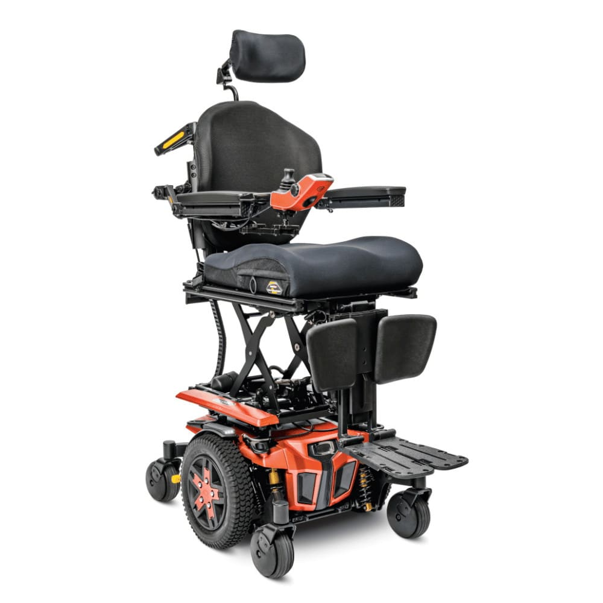
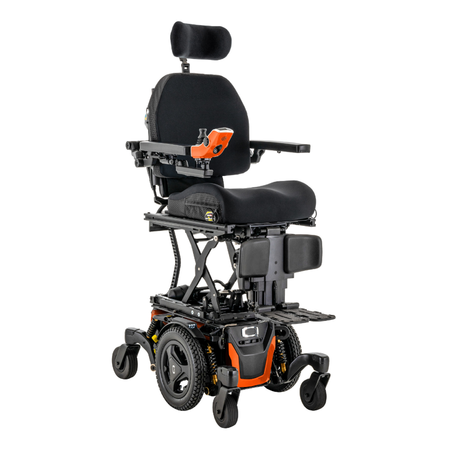
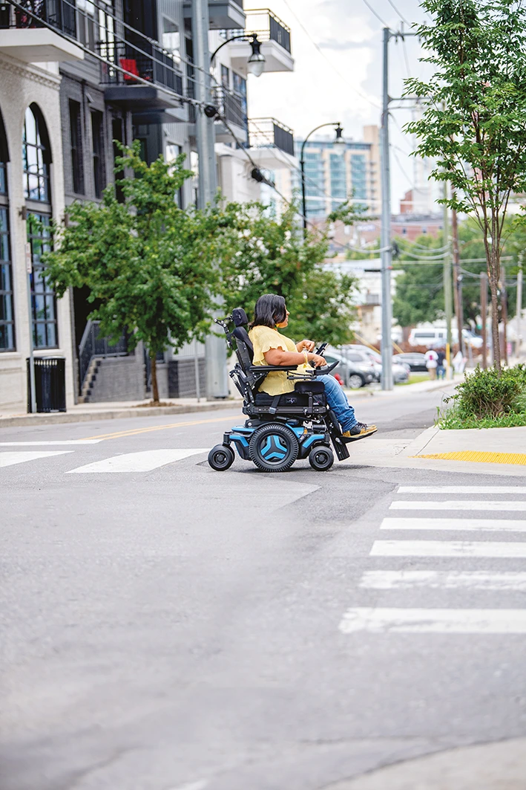
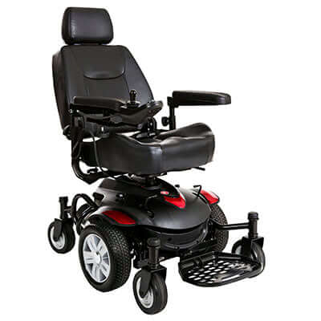
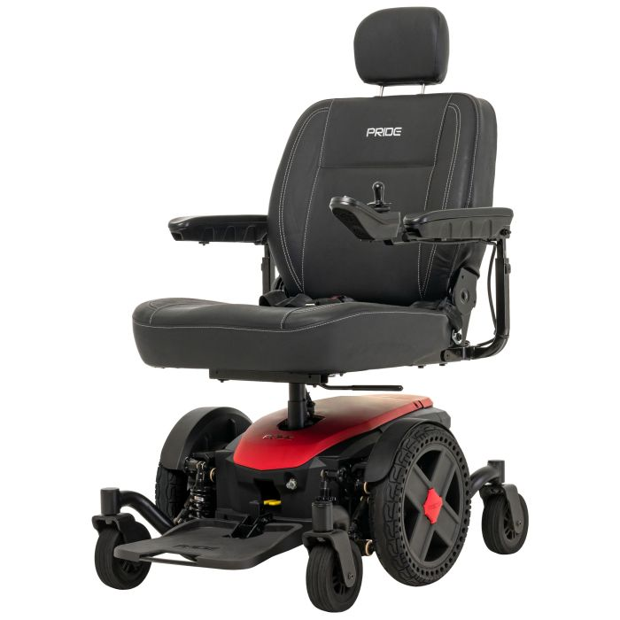
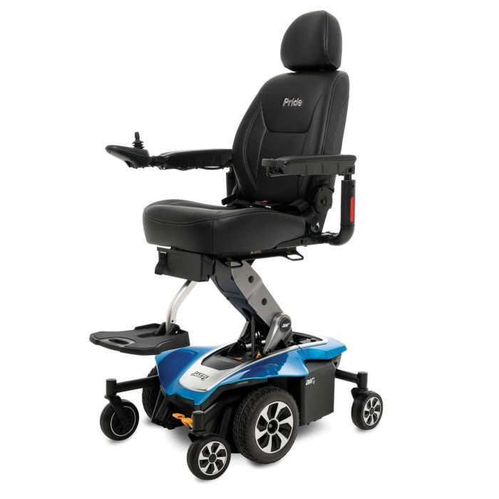

For your mother — walks with a walker, wants power mobility for outdoor sidewalks and inside the house. Compiled/updated August 17, 2026. Prices are approximate CAD and change often — confirm with the dealer before buying.
The core requirement is a device that works both outdoors on sidewalks and indoors in the house. That rules out the two extremes:
Prices from Mobility Specialties (Etobicoke) where a listed CAD price was available; quote-only items are noted. All are ADP-eligible.

Mid-wheel drive, SRS smooth-ride suspension, optional power seat elevate (iLevel) for reaching higher surfaces and easier transfers.

Same platform, purpose-built narrower chassis — the pick if the house has older, narrower doorways or hallways (common in older Toronto homes).

Compact base, FlexLink suspension + independent caster swing-arms — the smoothest ride over cracked sidewalks and curb cuts of anything on this list, with room to add power tilt later if needs increase.

Mid-wheel drive, frame engineered so all 6 wheels stay on the ground at all times over uneven terrain — the most affordable true mid-wheel chair here.

22" turning radius, Active-Trac ATX suspension, perforated tires for a softer ride, rated for both indoor and outdoor use.

Same mid-wheel platform, plus a 12" power seat elevate (11 sec) — useful for reaching counters/cupboards and being at eye level talking to people.
| Category | Examples | Notes |
|---|---|---|
| Portable/folding power chairs | Pride Go Chair (~$2,850–$2,999), Pride Jazzy Passport (~$3,000–$3,700), EZ Lite Cruiser DX12 (~$3,900–4,000) | Smaller casters and shorter range than the mid-wheel chairs above, but fold or disassemble to fit in a car trunk — worth it if the chair needs to travel for family outings or appointments. |
| Mobility scooter | Golden Buzzaround EX/Extreme (~$2,000–$2,700) | Cheapest option and best outdoor range (up to 18 mi), but the wide turning radius makes it harder to use in tight indoor spaces. Best if the home has a fairly open layout. |
| Dealer | Address | Phone | Notes |
|---|---|---|---|
| Mobility Specialties | Unit 16B, 106 Humber College Blvd, Etobicoke, M9V 4E4 | (905) 798-1853 | ADP/ODSP/WSIB/Blue Cross vendor. Free delivery across the GTA. Rentals available (call for power-chair rates). Site → |
| HME (Home Medical Equipment Ltd.) | 77 St. Regis Cres. S, Toronto, M3J 1Y6 (near Downsview Park) | 416-633-9333 | Walk-in showroom, no appointment needed — good for an actual test drive. Also the Toronto Permobil dealer. Site → |
| Vital Mobility | 3537 Bathurst St, North York, M6A 2C7 (+ Vaughan location) | (416) 901-3509 | Book an appointment for a personalized fitting. Site → |
| Lifecare Mobility | 440 Brimley Rd, Suite 1, Scarborough, M1J 1A1 | 647-350-4488 / 416-267-9800 | Carries new and refurbished chairs — worth asking if budget is tight. Site → |
| Wellwise by Shoppers (formerly Shoppers Home Health Care) | 2492 Danforth Ave, Toronto, M4C 1K9 (one of 40+ locations nationally) | (416) 698-2808 | Big national chain — convenient if you also want to compare in-store with other health equipment. Site → |
| Westin Healthcare | Brampton (GTA-wide delivery) | 905-451-7743 | ADP vendor, Canada-wide shipping — a bit further out but worth a price comparison call. Site → |
Top-up funding: March of Dimes Canada — a separate charitable Assistive Devices Program that can help cover part of the remaining 25% (or gaps ADP doesn't cover). Toll-free 1-866-765-7237, adp@marchofdimes.ca. Program info →
Note: higher-end chairs with power tilt/recline are sometimes provided through Ontario's Central Equipment Pool (new/refurbished loan pool with maintenance included) rather than an outright purchase — the ADP authorizer will flag this if it applies.